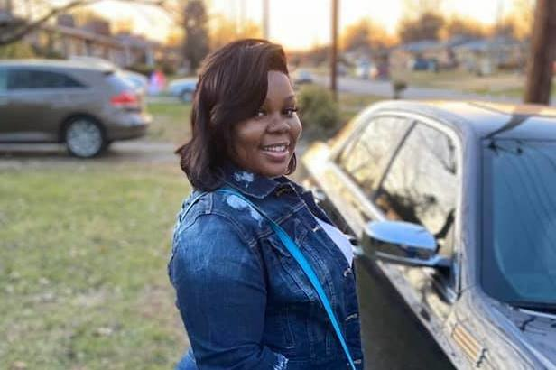

#SayHerName

Breonna Taylor, killed by police on March 13, 2020, seen here in December 2019.
Little Known Facts about Breonna Taylor
-
June 5, 2020 would have been Breonna's 27th Birthday.
-
Breonna went by 'Bre', 'mini-me', and "Breezy" with friends and family.
-
Breonna moved from Michigan to Louisville when she was a teenager.
-
She liked to play card games like Phase 10 and SkipBo.
-
As an EMT, Breonna was passionate about working in healthcare and making a difference.
-
Breonna had hopes to buy a house in the next year with her earnings as an EMT
-
Breonna also had aspirations of going back to school for a nursing degree
-
Just one month before her murder, she had bought herself a car - a Dodge Charger.